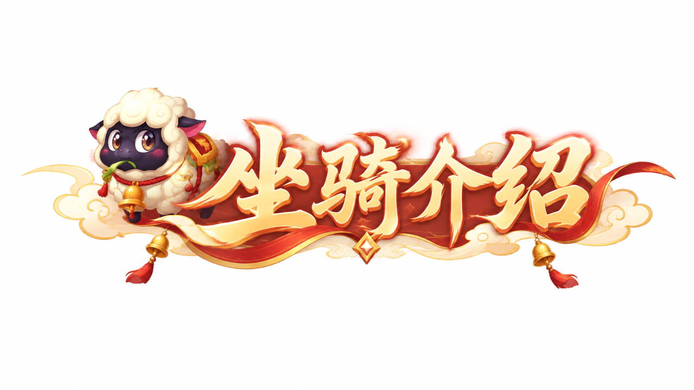
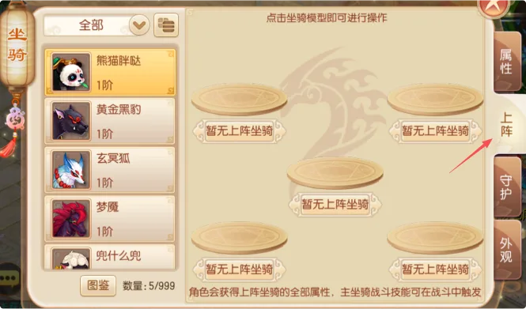
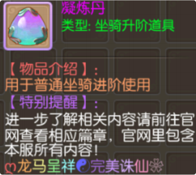
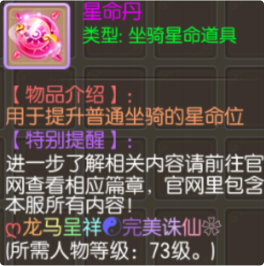
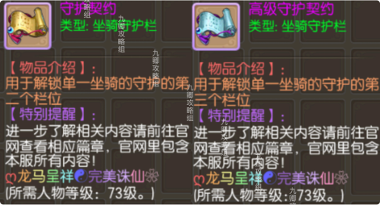
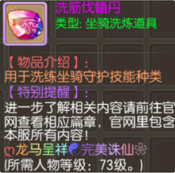
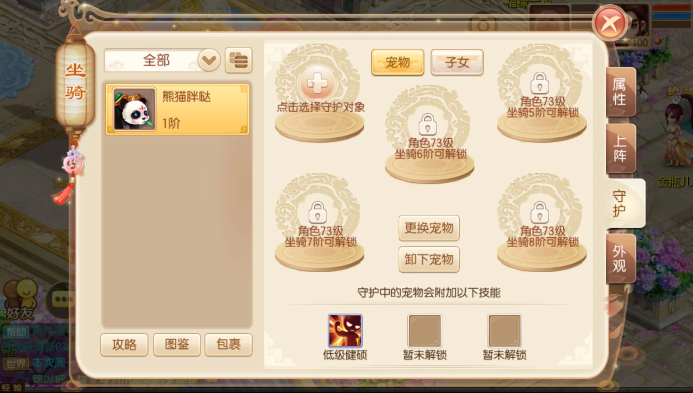
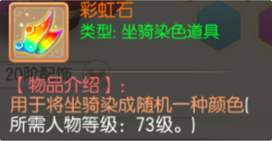

坐骑可通过消耗相同类型的坐骑和坐骑碎片进行升阶。上阵坐骑不能作为消耗材料被消耗掉。进阶后的坐骑会在外观上发生变化。进阶后坐骑的属性和技能都将得到提升。 已激活星命的坐骑被进阶消耗后 ，会将该坐骑消耗的星命丹通过邮件全部返还 ，返还的星命丹为专有道具。

一个碎片 =10经验 ，一个坐骑 =100经验

单一消耗！



使用[彩虹石]可将坐骑染成指定颜色 ，每次染色消耗 10个
